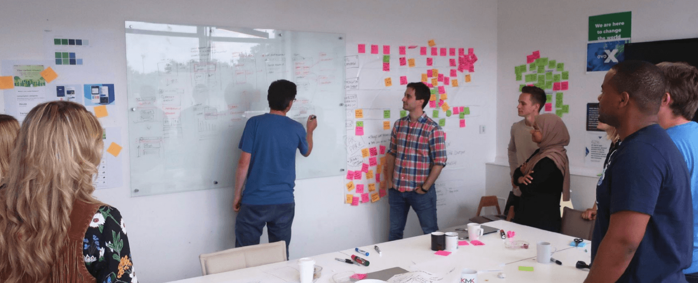
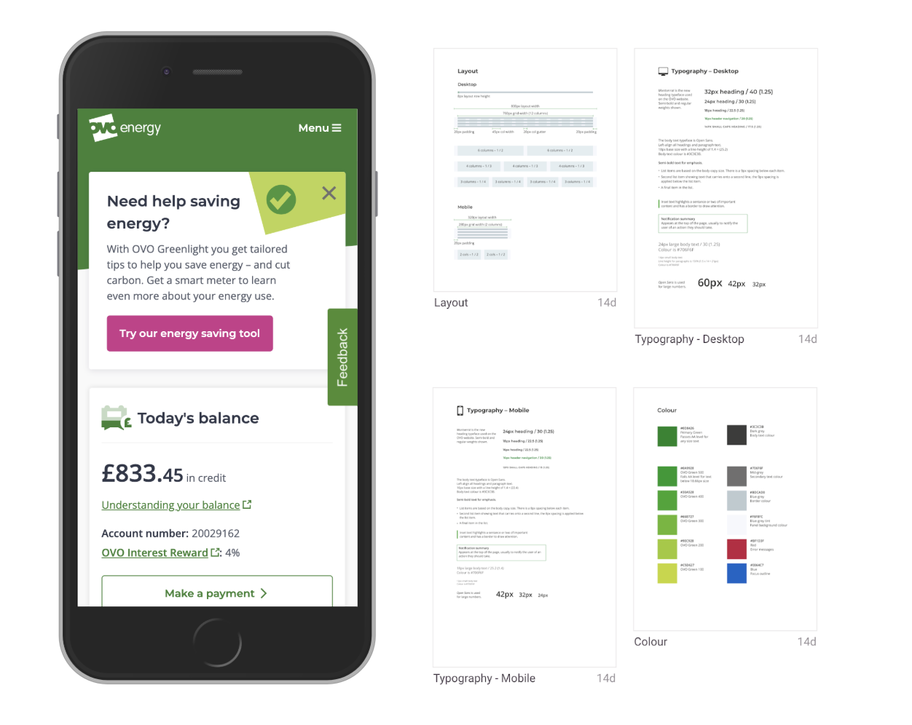
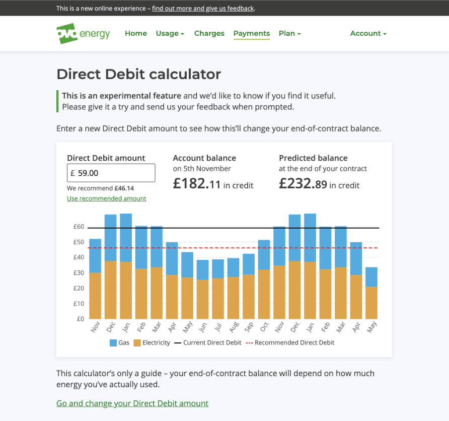
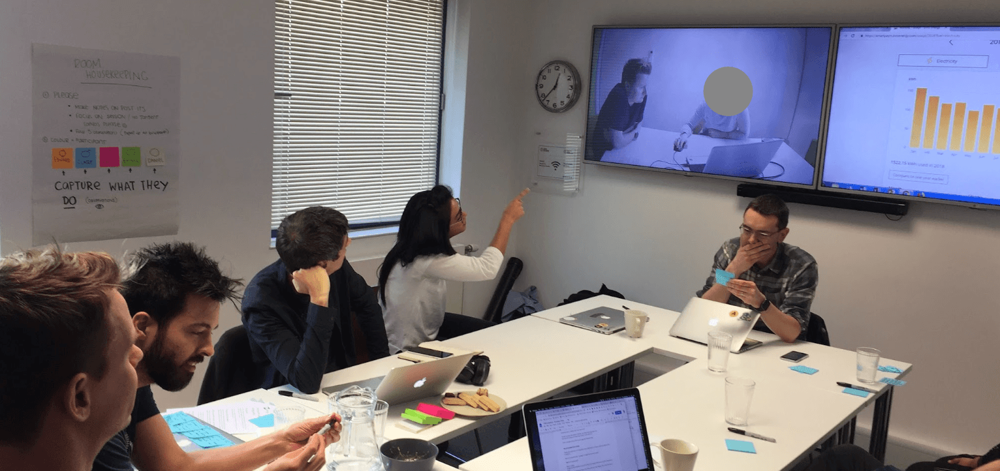

Company and dates: OVO Energy · Dec 2017 – Dec 2019
Redesigning the energy customer experience
OVO Energy was founded in Bristol in 2009 as an independent challenger to the UK's Big Six energy suppliers. When I joined in 2017, the company had over a million customers and was growing rapidly.

The context
OVO's digital products were running on a costly third-party platform that wasn't ready for the future energy transition. It lacked the flexibility to take advantage of what smart meters make possible, including innovative tariffs such as time and type of use pricing, and support for emerging products like solar panels and electric vehicles.
The challenge was not simply to lift and shift what already existed. It was an opportunity to fundamentally improve the experience: simplifying billing, modernising the app, raising accessibility standards and building a foundation that could scale to serve more customers.
My role
As Senior Designer, I worked across the new customer-facing web account and mobile app, embedded in a cross-functional team and taking work from discovery through to release.
What I did
Building the foundations
I designed the first smart meter journeys on the platform, a regulatory compliant contract renewals flow taken from concept sketch to production launch in only six weeks, an early design style guide and an initial service blueprint, establishing the foundations for other product teams to build on.


User research and accessibility
Working closely with the User Researcher on my team, I took an active role in a broad programme of mixed-method user research, which included multiple research rounds, moderated lab sessions and in-home visits with a diverse range of participants (including visually impaired customers).
I authored OVO's first accessibility principles, and a comprehensive external accessibility audit was undertaken to make sure we were setting the right standards early and avoiding the need for expensive refactoring later. The goal throughout was to design a product and service that worked for everyone.

Designing the user experience to enable migration at scale
Through 2019 I designed further customer experience journeys to unlock more cohorts of customers to be migrated onto the new platform: designing direct debit journeys, energy usage data visualisations, move-out processes and error handling. I tested and released a new information architecture to enable account features to scale, and collaborated with product teams on launching the OVO Beyond proposition, on time and within budget.
I designed, tested and released simplified bills and service notifications that were clearer and easier for users to understand and act on, helping to lift digital customer satisfaction scores to over 4 out of 5 for key journeys.
Outcomes
-
OVO Energy customers on the new platform by H1 2020
-
Digital customer satisfaction score for key journeys
-
Uswitch Supplier of the Year